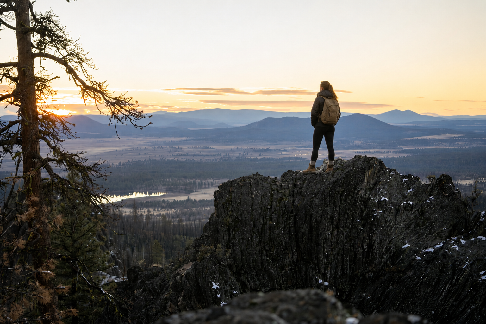
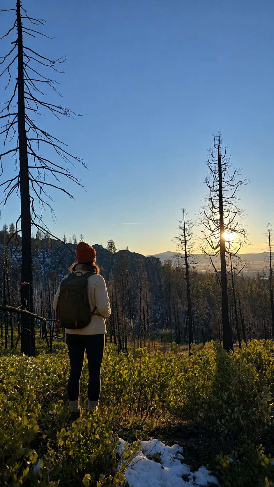
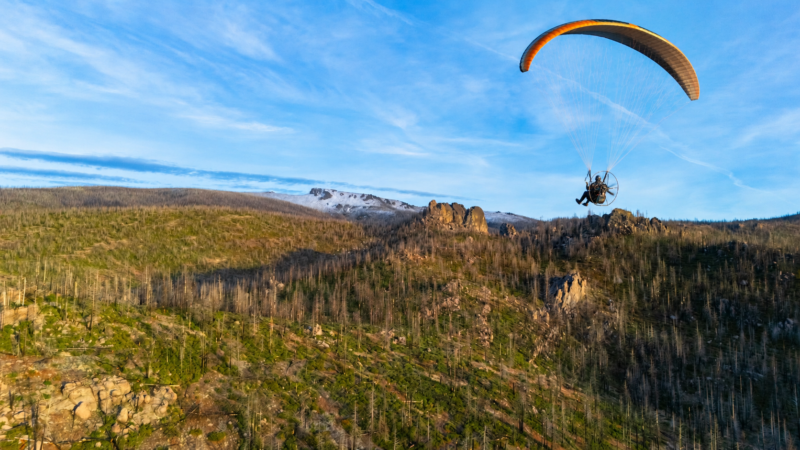

Family & Tradition
Our roots in ranching and rodeo shape the way we work: show up, follow through, and treat people well.


About Us
Family owned and operated in Bly, Oregon.
Our Story
At The Bly Outdoor Store, we’re more than just a shop — we’re part of a legacy. We serve the hardworking people of Bly and the surrounding region with outdoor gear, practical knowledge, and dependable local service.
We are a third-generation rodeo and ranch family. Our connection to this place also includes volunteering with the local fire department and supporting the community we call home.
Whether you’re preparing for hunting season, heading to a mountain lake, planning a family hike, or spending another day working outdoors, our goal is to help you leave ready.

Our Mission
Equip campers, hunters, anglers, and outdoor families with quality gear, support outdoor traditions, and strengthen the spirit of community in South Central Oregon.
What Matters Here
Our roots in ranching and rodeo shape the way we work: show up, follow through, and treat people well.
Bly is home. Supporting neighbors and serving the community are part of who we are.
We understand the country around Bly and help customers prepare for real conditions and real adventures.
Dependable gear, responsible ownership, and thoughtful preparation matter in the outdoors.

Our Home
The forests, lakes, mountains, and open country of South Central Oregon are more than scenery. They’re where we work, explore, hunt, fish, gather, and make memories.
The Bly Outdoor Store exists to help keep those traditions going — with useful gear, local perspective, and a welcome for everyone who enjoys the outdoors responsibly.
Come See Us
Stop by The Bly Outdoor Store for outdoor supplies, local recommendations, and service you can count on.
Contact Us